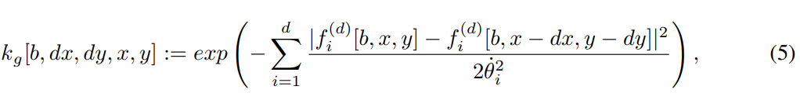
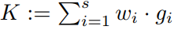
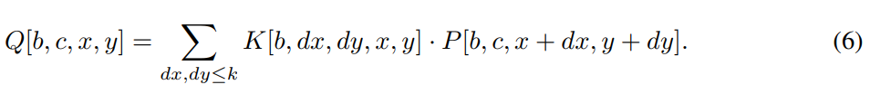
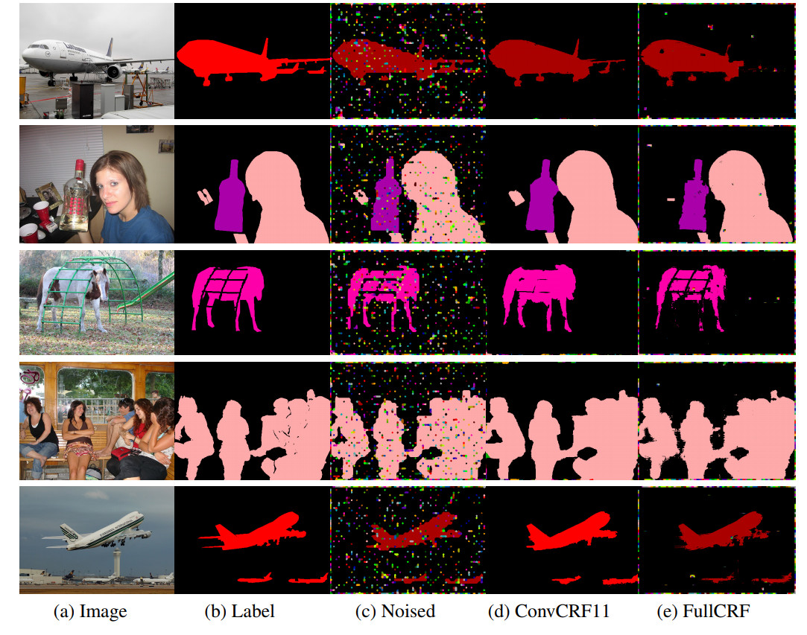
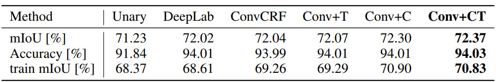
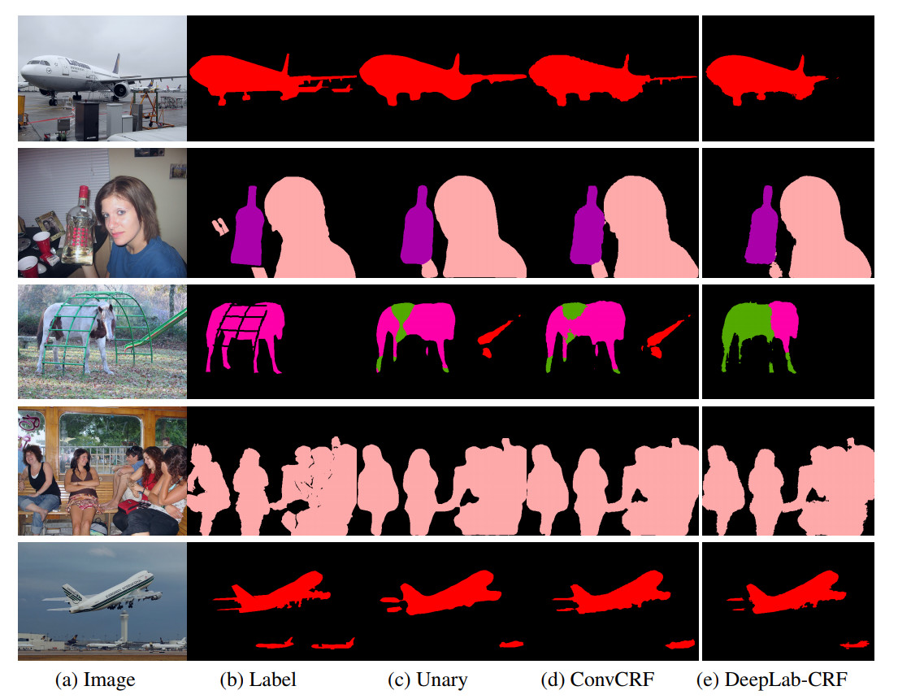

1、概述
语义分割等结构化预测任务可以从条件随机场等概率图模型获取很多优势，但由于条件随机场的训练速度及训练难度，目前研究者基本上都仅使用卷积网络进行处理。本文提出了一种卷积条件随机场，它能以卷积运算的方式解决 CRF 的两个大问题，并结合 CNN 实现更好的语义分割效果。
2、面临问题
语义图像分割旨在为图像中的每个像素生成分类标签，是视觉感知中的一个重要任务。卷积神经网络已在解决语义分割任务上取得了很好的效果 。虽然深层神经网络在提取局部特征和利用小感受野进行良好预测方面效果显著，但它们缺乏利用全局上下文信息的能力，无法直接建模预测之间的相互作用。因此，有人认为，简单的前馈卷积神经网络也许并不是完成类似语义分割等结构化预测任务的最佳选择 。为了解决上述问题，一些研究者成功地将卷积神经网络的有效性与条件随机场的建模能力相结合，以获得更好的性能 。尽管结构化模型的成功是无可争议的，但在最近的方法和研究成果却鲜有人问津。
我们认为，导致这一现状的主要原因是条件随机场的学习速度非常缓慢，且难以优化。如何为条件随机场等结构化组件学习特征仍然是一个开放性研究问题，许多方法完全依赖于手动设定的高斯特征。此外，条件随机场的推断比卷积神经网络的推断要慢两个数量级，这使得基于条件随机场的方法在许多实际应用中的运行速度很慢。而当前条件随机场较长的训练时间，也使得人们无法进行更加深入的研究和实验。
为了解决这两个问题，我们提出将条件独立性这一强假设添加到现有的全连接条件随机场（FullCRF）框架中。这使得我们可以将大部分推断重新表达为可以在 GPU 上高效实现的卷积操作，我们称之为卷积条件随机场（ConvCRF）。反向传播可用于训练 ConvCRF 的所有参数，ConvCRF 中的推断可以在不到 10ms 的时间内完成。与 FullCRF 相比，可以获得一到两个数量级的速度提升。我们相信，训练和推断上的速度提升将大大有利于未来的研究，同时我们也希望它可以帮助条件随机场重新成为解决结构化任务的流行方法。
3、卷积条件随机场
卷积条件随机场（ConvCRF）用条件独立假设补充 FullCRF。如果两个像素 i，j 的曼哈顿距离 d 可以保持 d(i, j) > k 的关系，那么我们认为他们的标签分布是条件独立的。其中我们把超参数 k 称为滤波器尺寸。
局部性假设是一个非常有力的假设，它暗示所有距离超过 k 的像素，成对相关性为零。这极大地降低了潜在成对性的复杂性。因为卷积神经网络基于局部特征处理可以取得很好的效果，那么我们也可以认为该假定在卷积神经网络上也是有效的。这使得卷积条件随机场的理论基础看起来很有前景，因为强大而有效的假设构成了机器学习建模的重要力量。
4、卷积条件随机场中的高效信息传递
本文的主要贡献之一是证明信息传递在卷积条件随机场中是高效的。因此我们不需要使用 Permutohedral lattice 近似，从而可以进行高效的 GPU 计算和完整的特征学习。为了实现这个目标，我们将信息传递步骤重新配置为带截断高斯核的卷积，并注意到这非常类似于 CNN 中的常规卷积实现。
考虑形状为 [bs，c，h，w] 的输入 P，其中 bs，c，h，w 分别表示批大小，类别数量，输入高度和宽度。对于由特征向量 f_1 … f_d 定义的高斯核 g，我们为它定义一个大小为 [bs, h, w] 的核矩阵：

其中 θ_i 是可学习的参数。对于一组高斯核 g_1 … g_s，我们定义经合并的核矩阵 K 为：

所有 s 个核的组合信息传递的结果 Q 如下所示：

这种信息传递操作类似于卷积神经网络中标准的二维卷积。然而，在我们的例子中，滤波器的值取决于空间维度 x 和 y。这与局部连接层相似 [8]。与局部连接层和二维卷积不同的是，我们的滤波器的通道维度 c 是不变的，我们一般可以将这种操作看作是维度 c^2 上的卷积。
通过仅使用标准的卷积神经网络操作来实现我们这种卷积是可能的。然而，这要求数据在 GPU 内存中重新组织好几次，这是一个非常缓慢的过程。分析显示 90％ 的 GPU 时间开销用于数据重组。因此，我们选择建立一个本地的底层实现，以获得额外 10 倍的加速。
我们可以通过类似于二维卷积（和局部连接层）来实现我们这种卷积的高效计算。第一步是平铺输入 P 以获得形状为 [bs，c，k，k，h，w] 的数据。这个过程通常被称为 im2col，与二维卷积相同 [9]。二维卷积通过在空间维度上批量进行矩阵乘法来完成，我们用通道维度上的批量点积来代替这一步骤，其它所有步骤都是相同的。
5、实验结果

图 1：合成任务的可视化分析。特别是在最后一个例子中，我们可以在物体边界处清楚地看到的来自 permutohedral lattice 近似的伪影。
实验中，我们在训练集的 200 幅留存图像上训练条件随机场模型，并在官方 Pascal VOC 数据集的 1464 幅图像上对它的性能进行评估。我们在表 2 中报告了我们的结果，图 3 为模型输出的可视化分析。

表 2：使用解耦训练的条件随机场在验证集上的性能比较。+ C 表示模型使用卷积作为兼容性转换，+ T 表示模型学习了高斯特征。除了来自 DeepLab 的条件随机场，其他模型我们都使用一元运算（unaries）。

图 3：使用解耦训练策略在 Pascal VOC 数据下的结果可视化。示例 2 和 4 描述了条件随机场无法改进一元运算（unary）的失败情况。
对于具有挑战性的语义图像分割任务，最有效的模型传统上将条件随机场（CRF）的结构化建模能力与卷积神经网络的特征提取能力结合起来。然而，在最近的工作中中，使用条件随机场进行后处理已经不再受到人们青睐。我们认为这主要是由于条件随机场训练和推断速度太过缓慢以及其参数学习的难度所致。为了克服这两个问题，我们提出将条件独立的假设添加到全连接条件随机场的框架中。这使得我们可以在 GPU 上高效地使用卷积操作重新进行推断。这样做可以将推断和训练加速超过 100 倍。卷积条件随机场的所有参数都可以使用反向传播轻松进行优化。